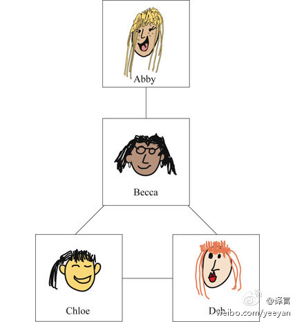
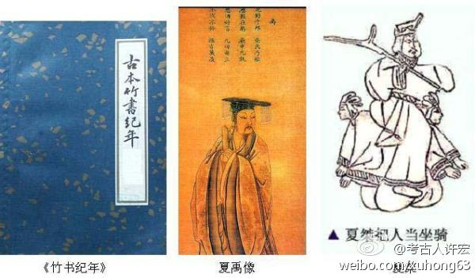

//@刘知远THU:有意思。//@马少平THU: 这是为什么呢？//@刘强THU://@sheepfun: 好神奇！//@李开复: 这个有意思，大家不必为此自卑了。@译言:【你的好友为什么总比你大多数朋友少？】研究Facebook会发现，平均一个用户有190个好友，而他们的朋友平均有635个好友。对线下社交网络的研究也发现了同样的趋势。这与各人的性格无关，只是一个基本的算数问题。朋友的好友平均数总是大于你的好友数量。这一现象被称之为好友悖论。网页链接 
转发微博。@考古人许宏:【“夏文化”究竟是什么？】作為《中國考古學大辭典》夏商周卷的主編（之一）和召集人，我把“夏文化”這一條留給了自己。 不是我的年輕同仁無法把握它，大家都可以寫出符合要求的辭條。 身為... --发布到微刊《考古微問答》网页链接 